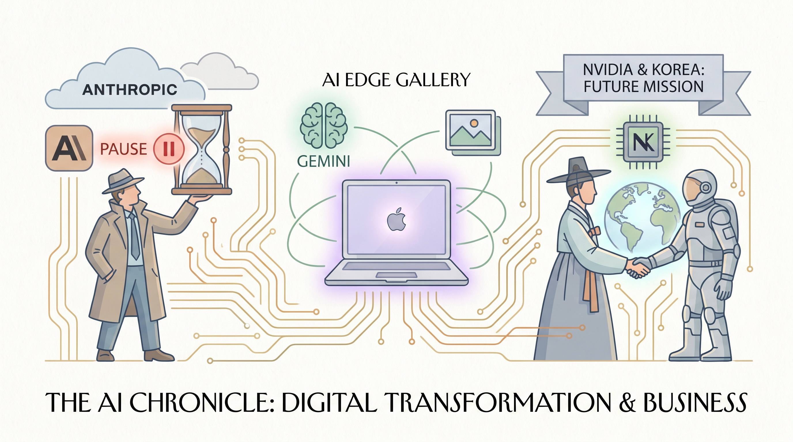

Anthropic呼吁政府和AI开发者共同建立“暂停按钮”机制，以便人类有时间评估AI系统风险。
两克伴AIGC日报
2026-06-06 星期六

本期关注：Anthropic呼吁设置AI暂停按钮 让人类有时间评估现状、全新AI Edge Gallery让你直接在Mac上运行谷歌Gemini大语言模型 - AppleInsider、首尔使命：英伟达与韩国如何构建AI的未来、千Token木：在30亿参数模型上构建多智能体经济
📰 行业动态
Google推出AI Edge Gallery Mac版，用户可在本地运行Gemma大语言模型，无需联网。
NVIDIA CEO黄仁勋访问首尔，宣布深化与韩国在主权AI基础设施及机器人领域的合作。
🔥 今日焦点
Hugging Face 最近发布了 "Thousand Token Wood" 项目，展示了一个令人耳目一新的思路：用 3B 参数的小模型构建多智能体经济系统。这个项目本质上是在探索"小模型也能干大事"的可能性——通过多智能体协作、任务分工和资源调度，让参数量远小于 GPT-4 的模型完成复杂任务。
从技术角度看，这个项目很有意思：它没有追求单模型 scaling law，而是把目光转向了系统层面的协作智能。多智能体架构在去年 MetaGPT 等项目中已经展露头角，但这次直接在 3B 模型上跑通，意味着普通开发者也能低成本复现。对那些想在大模型军备竞赛之外找新路径的人来说，这提供了一个值得参考的实验样本。
Google Research 刚刚发布了一篇关于 Gemini Enterprise Agent Platform 的 Agentic RAG 技术解析文章。RAG（检索增强生成）大家都不陌生，但 Agentic RAG 意味着系统不再只是"查资料再生成"这么简单，而是让智能体具备规划、工具调用和多步骤推理的能力——遇到复杂查询时，它能自主决定要不要查、查什么、查完怎么用。
这篇博客的核心看点在于" dependable responses"——Google 在强调企业级场景下，准确性比花哨功能更重要。Agentic RAG 的设计目标就是减少幻觉、提升答案可信度。对于已经在用 Gemini 企业版或者计划上马的企业用户来说，这篇文章提供了很重要的技术背景。
📚 深度长文
如果你在做 RL-based Agent，这篇文章可能是你今年读过最扎心的一篇。作者在 Latent.Space 深度复盘了他多年观察 trajectory 数据后发现的一个残酷事实：大多数团队训练的 RL 环境（environment）质量烂得惊人，而这些「broken harnesses」正在悄无声息地让模型变得更差，而不是更好。
文章没有止步于泛泛批评，而是给出了具体的诊断框架——比如如何识别 reward hacking、如何判断环境是否真的在测量你关心的能力、以及为什么很多团队的「环境验证」只是走过场。更犀利的是，作者指出行业普遍低估了「环境质量」和「数据质量」之间的差距：大家都在卷模型参数和预训练数据，却很少有人认真审视自己的 RL 环境是否真的能教会模型有用的行为。
当你看到「Distributed Training of Llama Explained Simply」这样的标题时，可能会以为又是篇入门科普。但这篇文章的野心不止于此——它用简洁的篇幅把 LLaMA 训练背后的工程复杂性讲清楚，包括数据并行、模型并行、流水线并行等核心概念，以及在数千张 GPU 上做分布式训练时会遇到的实际挑战（比如通信瓶颈、梯度同步的开销）。
为什么这对 Agent 开发者重要？因为当你在设计一个需要调用大模型的 Agent 系统时，对底层训练基础设施的理解会直接影响你对模型能力边界的判断。比如，为什么某些 7B 模型能在特定任务上「看起来」比 70B 强？很大程度上是因为训练策略和数据处理的不同，而这些都和分布式训练紧密相关。
🐦 Ta们说
> "OpenAI will win this round
- Mythos is way too expensive
- Gemini generally isn't great for agentic loops
> "Absolutely brutal day for AI fantasies:
Nvidia $NVDA: down 6.2%
Broadcom $AVGO: down 7.92%
Coreweave $CRWV: down 7.07%
Nebius $NBIS: down 12.27%
Oracle $ORCL: down 9.59%
> "Today, we are officially launching the Sakana AI RSI Lab in Tokyo to build open-ended, adaptive AI systems that collectively self-improve. I am incredibly proud of our team’s work over the past 2 years, shipping the breakthrough research that laid the foundations for this moment.
Building in Japan provides us with the ultimate design constraint. Just like Japan’s historical dominance in manufacturing was achieved by fundamentally redesigning the factory floor to do more with less, we are ...
📄 重点论文
**核心贡献**: 提出了CollabSim方法论，通过受控多智能体实验系统性地研究LLM Agent的协作能力。该方法聚焦于Agent建立共同基础、维持共享任务理解、平衡个人与集体激励、以及修复对齐偏差等核心协作能力。研究揭示了当前MAS的瓶颈往往不在个体任务解决能力，而在缺乏协作竞争力，为评估和改进多智能体系统提供了实证基础。
**与AI Agent的关联**: 该论文直接针对多智能体系统的核心问题——协作能力，对AI Agent领域具有重要意义。研究提供了系统性的评估框架，帮助理解Agent在团队协作中的行为模式和局限性，对设计更有效的多智能体系统和人机协作场景具有重要参考价值。
**核心贡献**: 提出了Benchmark Agent，一个能够自主构建基准测试的完全自主化智能体。该系统解决了传统基准测试构建耗时费力、难以复用、以及模型性能迅速饱和导致区分度不足等问题。通过Agent自动化流程，提高了基准测试的可持续性和可扩展性，为LLM和MLLM评估提供了新范式。
**与AI Agent的关联**: 该论文展示了Agent在元任务中的应用潜力——即Agent作为构建评估工具的主体。这体现了AI Agent在自动化复杂工作流程中的能力，为Agent在工具使用和自主规划方面的研究提供了新的应用场景，对Agent系统的实用化具有启发意义。
⭐ 9.4K
如果你想在机器人、自动驾驶或智能基础设施领域构建 Physical AI，肯定会遇到模型训练成本高、数据稀缺、工具链不完善这些头疼的问题。Cosmos 就是为了解决这些痛点而生的——它是一个开源的世界模型平台，提供预训练好的世界模型、专用的数据集以及完整的工具链，让你不用从零开始训练，省去大量时间和算力成本。